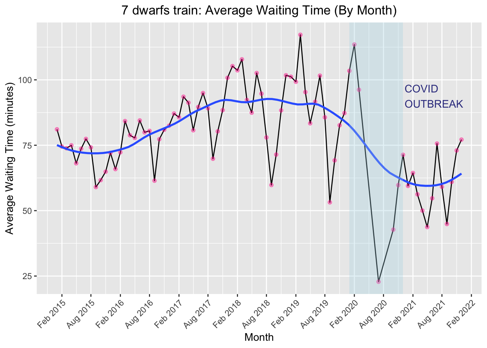
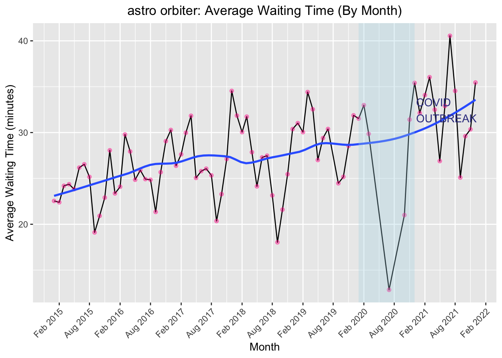
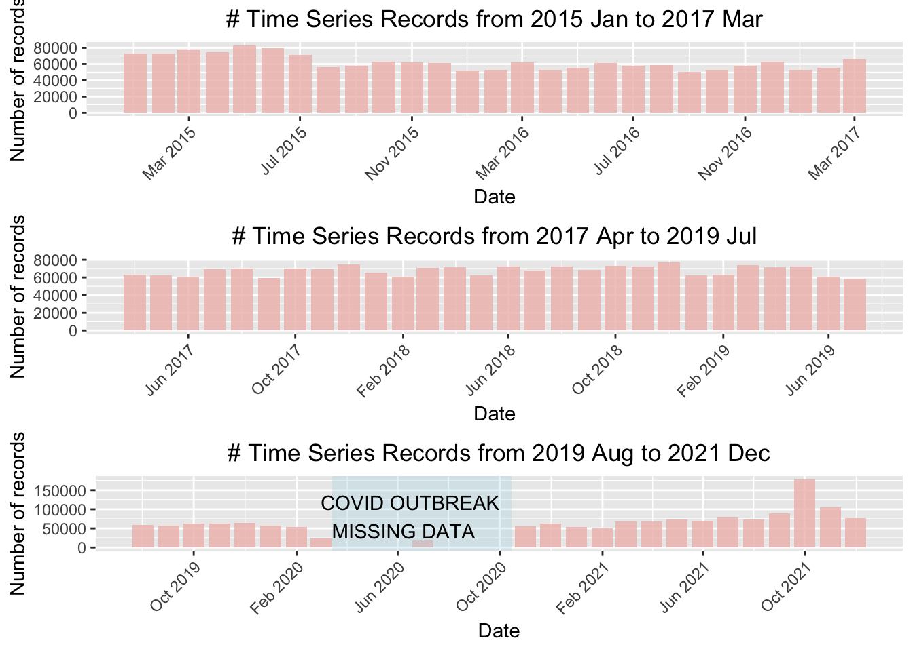

Chapter 3 Data
3.1 Sources
The data comes from Touringplans.com, and the website collected all its data from the following three sources:
From app users of Touringplans.com
The app records the time its users enter waiting lines and enjoy the facility. The difference between these two times is the actual waiting time.Disney’s My Disney Experience app
Disneyland estimates the waiting time based on the length of waiting lines. The estimated waiting time is posted on a sign at the entrance to attractions and shown on Disney’s app.Observation from the staffs of Touringplans.com on sights. The staffs visit Disneyland and record their actual waiting time for each attraction.
3.1.1 Basic Information about Data
The data can be downloaded directly from the website for free in CSV format. In total, there are 5143775 time series records plus 95 rows of metadata cocntaining meta information about attraction. A CSV document downloaded contains all wait time data for a specific attraction. The wait time is recorded at different time intervals (every 1 ~ 10 minutes) for each day. Each CSV files consists of four columns, which are “date”, “datetime”, “SACTMIN”, and “SPOSTMIN”. Each columns has the type character, character, integer, and integer accordingly.
3.1.2 Issues & Design Choice:
After plotting the raw data (Section 3.3.2), we discovered the following problems:
There are no data from April 2020 to October 2020, except August 2020. This is due to the COVID-19 outbreak, and the Magic Kingdom Park was closed. However, there is data for August, so we deemed that these data are recorded due to some error, and we dropped these data from our analysis.
We also discovered that the “entities” data table assigned some attractions with the wrong themed land. To correctly group each attraction to the right land, we went to Disney’s official website to find a map and other related information.
There are 41 attractions CSV files available to download, but not all these files contain valid data. Some files contain only NA data for wait time, so after filtering out these files, there are only 25 files with valid wait time data.
3.2 Cleaning / transformation
After coarse filtering, our datasets have 25 CSV files. Below is an example of how our raw data look like for the attraction Dumbo:
## date datetime SACTMIN SPOSTMIN
## 1 01/01/2015 2015-01-01 07:16:12 NA 10
## 2 01/01/2015 2015-01-01 07:23:12 NA 10
## 3 01/01/2015 2015-01-01 07:29:12 NA 10
## 4 01/01/2015 2015-01-01 07:37:12 NA 15
## 5 01/01/2015 2015-01-01 07:44:12 NA 10
## 6 01/01/2015 2015-01-01 07:51:12 NA 10Below is a list of all the data cleaning/transformation we have performed on raw data:
The “date” column is redundant because its values are all contained in the “datetime” column too, so we dropped the “date” column.
“SACTMIN” has a lot of missing values, and we observed that when “SPOSTMIN” has missing data, its corresponding “SACTMIN” has a value and vice versa. Hence, we replaced all the missing values in “SPOSTMIN” with the values from “SACTMIN”.
If both the “SACTMIN” and “SPOSTMIN” columns are NA, then it means that the row does not have valid wait time data for our analysis, so we drop the row.
After combining the “SACTMIN” and “SPOSTMIN” columns, we renamed the old “SPOSTMIN” column to “Waiting Time” and dropped the “SACTMIN” column.
In the new “Waiting Time” column, we also checked that if there are values less than 0. Since wait time cannot be negative, we dropped these negative values.
Below is an example of how our cleaned data look like for the attraction Dumbo:
## X Datetime Waiting.Time
## 1 0 2015-01-01 09:02:13 10
## 2 1 2015-01-01 09:09:16 10
## 3 2 2015-01-01 09:16:12 10
## 4 3 2015-01-01 09:22:35 10
## 5 4 2015-01-01 09:23:12 10
## 6 5 2015-01-01 09:29:12 10Moreover, in our analysis of wait time based on the time of the day, we also converted the “datetime” column from character type to datetime using as.POSIXlt(). This will allow us to compare time easily. We assigned time before 12 PM to be the morning category, time between 12 PM and before 6 PM to be the afternoon category, and time after 6 PM to be the evening category.
3.3 Missing value analysis
3.3.1 Missing Metadata

From the above chart, we can see that there are missing data values for all the three variables. These three variables are some general information about each attraction, and we observe that if one variable has missing data, then the other two variables tend to be missing too, only one exception for attraction “enchanted tiki rm”. We dropped the missing data for our analysis. Since they do not have a strong relationship with analyzing the wait time trend.
3.3.2 Missing Time Series Data

Since it is not easy to visualize the missing data pattern for time series data, we chose to make three bar charts that represent the number of data records for each month between January 2015 and December 2021. As a result, we found that there is a gap between April 2020 and October 2020, corresponding to our previous discovery of potentially wrong data. In addition, from the plot above, we can observe that the number of data points are approxmately equivalent for each month before COVID disruption; but after COVID, the number of data points decrease, corresponding to the fact that there are fewer tourists after COVID outbreaks. However, we identified that the data points for each month are sufficient for us to do analysis in later part.